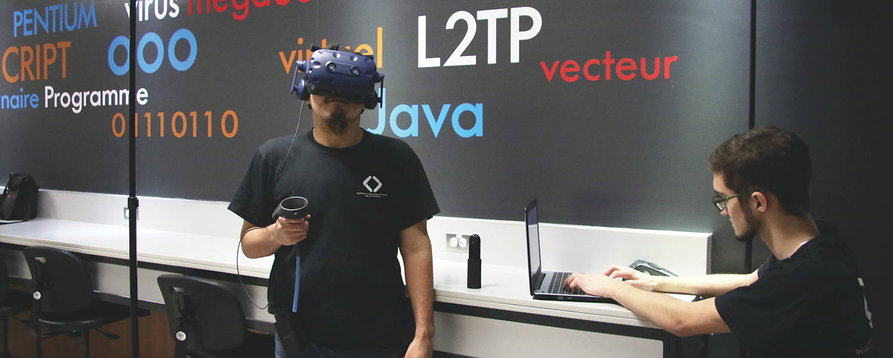

Un aperçu du programme
-
arrow_right
Excellentes perspectives d'emploi (Emploi Québec)
-
arrow_right
Salaire initial moyen 17,75 $/h, salaire initial supérieur 22 $/h
-
arrow_right
Simulations, jeux et réalité virtuelle
-
arrow_right
Diplômés recherchés par les employeurs
-
arrow_right
Grande variété de milieux de travail pour une carrière selon tes intérêts
Comme technicien ou technicienne en informatique de gestion, tu développeras des logiciels et des applications qui répondront efficacement aux besoins d’entreprises de toute nature. Tu proposeras également des améliorations fonctionnelles aux plateformes existantes en plus d’assurer la formation et le soutien technique aux utilisateurs.
Dans ton cheminement, tu auras des cours de programmation, de réseautique et de multimédia. Tu étudieras la structure de données et les systèmes d’exploitation. Tu verras aussi des notions de gestion qui te permettront de planifier le déroulement d’un projet en considérant les ressources humaines et financières disponibles. Au terme de ta formation, tu seras en mesure de concevoir et de développer des projets web qui répondront à différents besoins administratifs.
Nos avantages
-
arrow_right
Une formation dans le développement d’applications web et de gestion;
-
arrow_right
Une immersion dans les domaines des applications mobiles, de la simulation, des jeux vidéo et de la réalité virtuelle;
-
arrow_right
Des projets concrets élaborés pour de vrais clients;
-
arrow_right
L’alternance travail-études qui permet de réaliser deux stages rémunérés en entreprise;
-
arrow_right
Un stage crédité en entreprise à la 6e session;
-
arrow_right
Un programme de tutorat par les pairs qui jumelle un étudiant de 2e ou de 3e année à un étudiant de 1re année.
Perspectives d’avenir
Milieux de travail
entreprises offrant un soutien technique aux usagers : institutions financières, entreprises manufacturières commerciales ou de services, etc.;
bureaux de consultants en informatique;
entreprises de développement web et mobile;
établissements scolaires;
établissements du réseau de la santé;
organismes gouvernementaux.
Conditions d’admission
Conditions générales d’admission collégiale
ET
Mathématiques CST 5e sec*
Ancien curriculum du secondaire
Mathématiques 436
*À noter que le cours de mathématiques TS ou SN de 4e sec. satisfait également le préalable de mathématiques exigé (CST 5e).
Ouvert au 2e tour.
Grille de cours
1RE année
1
Écriture et littérature
Anglais 1 R4
Philosophie et rationalité
Activité physique et santé
Logique et arithmétique de l'ordinateur
Introduction à la programmation
Développement Web I
Métiers-Technologies-Applications
2
Littérature et imaginaire
Anglais 2 R4 Technique
L'être humain
Activité physique et efficacité
Principes liés aux bases de données
Programmation orientée objet
Développement Web II
Système d'exploitation et composantes matérielles
SESSION ÉTÉ - STAGE 1
2e année
3
Littérature québécoise
Algèbre linéaire et statistiques appliquées à l'informatique
Cybersécurité
Programmation d'interface graphique
Base de données I*
Développement Web III
4
Cours complémentaire 1
Communication en informatique
Base de données II
Génie logiciel
Programmation réalité virtuelle - Jeux - Simulations
Assurance qualité logicielle
SESSION ÉTÉ - STAGE 2
3e année
5
Pratique de la communication
Éthique
Activité physique et autonomie
Cours complémentaire 2
Aspect légaux de la profession
Projet d'intégration-Phase I
Domaines d'exploration technologique I
6
Domaines d'exploration technologique II
Projet d'intégration - Phase II
Programmation d'applications mobiles
Stage en entreprise